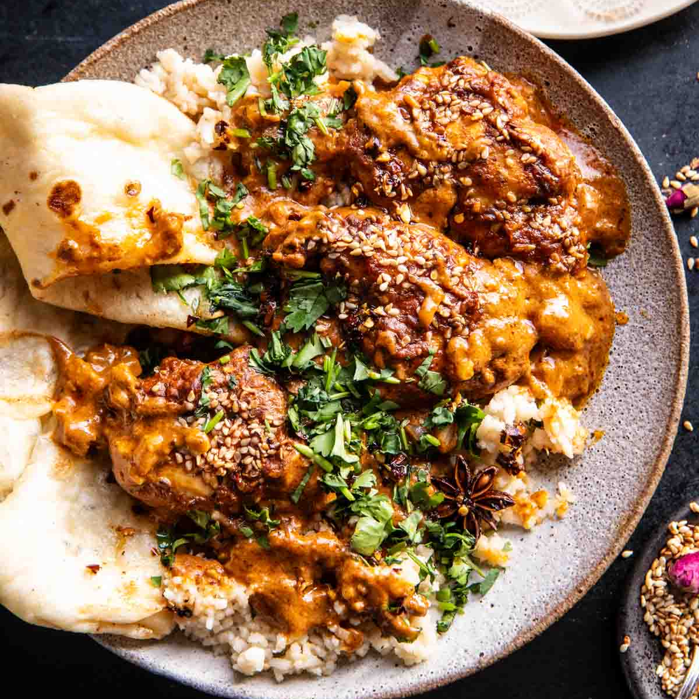

Recipe of the month!
This months recipe is from Monica.
Easy Baked Spicy Sesame Butter Chicken
Ingredients for 6 servings
- 900g boneless chicken
- 60ml plain Greek yoghurt
- 6 cloves of garlic, chopped
- 2 tbsp fresh grated ginger
- 2 tbsp garam masala
- 2 tsp cumin
- 1 tsp turmeric
- 1 tsp cayenne pepper
- salt and pepper to taste
- 56g salted butter
- 1 large onion, chopped
- 400ml full-fat coconut milk
- 130g tomato paste
- 28g cold, salted butter, sliced
- 2 tbsp sesame seeds
- 8g fresh cilantro, chopped
- steamed rice and naan
- 84g salted butter
- 1 tsp chili flakes
- 1/2 tsp paprika powder
Chili Butter
Put chicken, yoghurt, garlic, ginger, garam-masala, cumin, turmeric, cayenne pepper and 1 tsp salt in a big baking dish and let it all sit for 5 minutes.
Preheat your oven to 200°C.
Add onion, coconut milk and tomato paste to the ingredients in the baking dish and stir until well combined and creamy. Decorate your chicken-pieces with the butter-slices and sprinkle everything with sesame seeds.
Bake for 30-40 minutes. Make sure the chicken is cooked through. Ass the cilantro.
While the chicken is in the oven, turn to the Chili Butter. Melt the butter with the chili flakes and the paprika powder until the butter is starting to brown.
Drape the chicken with sauce on some bowls of rice and serve with naan and the chili butter.
Enjoy!